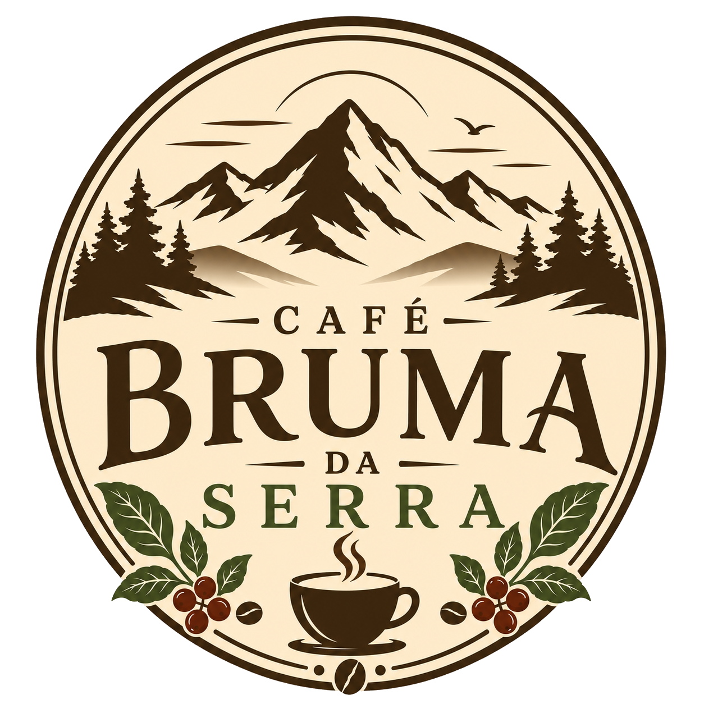
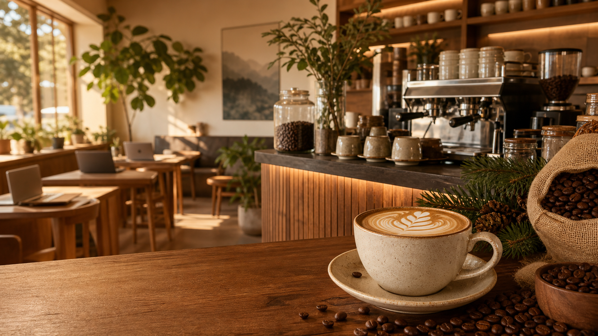

Bar de cafés
Espresso, coados, bebidas cremosas e opções sazonais com grãos selecionados.


Em breve em São José dos Campos
Um refúgio para cafés especiais, conversas tranquilas e jornadas de trabalho mais leves.
Sobre
O Café Bruma da Serra nasce para ser um ponto de pausa em São José dos Campos: café bem tirado, comida afetiva e uma atmosfera confortável para encontrar pessoas, ler, planejar o dia ou simplesmente respirar.
A loja também terá espaços de coworking pensados para quem precisa de foco sem abrir mão de aconchego. Tomadas, mesas generosas e uma rotina mais gostosa acompanhada por café fresco.
Um ambiente moderno, com textura natural, luz quente e detalhes em verde pinheiro para lembrar que produtividade também pode ser tranquila.
Experiência
Espresso, coados, bebidas cremosas e opções sazonais com grãos selecionados.
Doces, salgados e pequenas delícias para acompanhar uma pausa sem pressa.
Espaços para reuniões leves, estudo, criação e trabalho individual.
Acompanhe a abertura